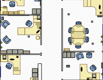

 OpenRoomMap is a system that allows users to annotate building floor maps with fine-grain positioned furniture, appliances and room features, in a user-friendly graphical user interface. It can be used for simple tasks such as locating and visualizing building rooms and spaces and serves as a recourceful and up-to-date database for planning and research into energy expenditures and optimization.
We want to collect a detailed indoor plan of the Computer Laboratory and we think that this information is best entered and kept up to date by building users themselves. Please use the link below to launch our editor software which you can use to position furniture and appliances within the building.
We are interested in as much detail as you are prepared to provide: the names of the floorboxes in your office, the location of air vents, the name of your workstation and the position of your desk and shelving.
If you would like to be kept informed of future developments please join the mailing list: cl-openroommap.